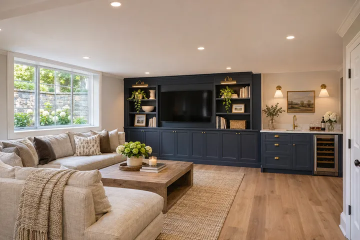

Basement remodeling in Maryland.
Finishing or reworking a lower level as a family room, guest suite, office or media room, and remodeling interior rooms upstairs. For established homes within about 40 miles of Olney.

What is checked before the drawings
A basement comes with conditions the rooms upstairs do not have. They set the plan.
Moisture
A lower level gets finished once it is dry. We look for staining on the walls and floor and ask about past water, so any fix is part of the scope before a wall is framed.
Ceiling height
Beams, ducts and drain lines decide where rooms and soffits can go. They are measured before any layout is drawn.
Daylight and doors
Windows and exterior doors show where the main room belongs. A room meant for sleeping has code requirements of its own, reviewed by the permit office for your address.
Heating and air
Whether the existing system can serve the new rooms is assessed on site. It is checked early, because new ducts change where soffits go.
Floors and walls
Flooring, insulation and wall finishes are chosen for a room that sits partly below grade.
Four kinds of lower-level project
A basement budget grows with what the space has to do. Open floor area is the simplest part. Plumbing below the main floor, enclosed rooms and changes to heating and cooling add the most.
| Project | What it includes | What drives the cost |
|---|---|---|
| Open family or media room | Framing, insulation, drywall, flooring, lighting and outlets in one open plan. | Floor area, soffit work around ducts and beams, the number of lights and the flooring. |
| Lower level with a bath or wet bar | Drains, supply lines and ventilation added below the main floor. | Where the existing drain sits relative to the new fixtures, and whether the house is on public sewer or a septic system. |
| Guest suite or home office | Enclosed rooms with doors and closets, often with their own heating and cooling control. | Code requirements for a sleeping room, HVAC changes and sound control between floors. |
| Interior rooms upstairs | Built-ins, trim, doors and flooring, or walls reworked in rooms you already use. | The amount of finish carpentry, and whether any wall moves. |
Your price comes from your drawings and selections and from the conditions found on site, set out in a written scope. See how a project runs. A lower-level bath follows the same decisions as any bathroom remodel.

Planning around how the space will be used
Tell us who the space is for: guests, kids, work or movie nights. We walk the lower level with you, measure it and note the beams, ducts, windows and the path of the stairs. The layout is drawn around those, and the wish list is sorted into essential and optional so the scope can fit the budget.
Schedule a ConsultationWho reviews a lower-level project
Finishing a basement touches wiring and heating, and sometimes structure or plumbing, so more than one office can be involved. What your address requires is confirmed in writing before work is accepted.
Montgomery County
The Department of Permitting Services lists interior alterations, electrical work and replacing heating equipment among home improvements that will likely need a permit.
Plumbing
For a basement bath or wet bar in Montgomery County, plumbing goes through WSSC Water, which requires most plumbing projects to be done by a plumber who holds a WSSC Water license.
Well and septic
The County also lists wells and septic systems as work that needs a permit. If your home has a private system, raise it at the start: adding a bathroom or a bedroom is a question for the County before the layout is fixed.
Rockville and Howard County
The City of Rockville issues its own building and trade permits for properties in the City. In Howard County they come from the Department of Inspections, Licenses and Permits.
Basement finishing questions
More remodeling questionsHow much does it cost to finish a basement in Maryland?
The budget follows what the space has to do. An open family room is the simplest scope. A bathroom or wet bar adds plumbing below the main floor, and enclosed rooms add doors, wiring and heating and cooling changes. Moisture repairs, if needed, come first. A written scope, based on your drawings and selections, turns those factors into a price.
Do I need a permit to finish a basement in Montgomery County?
Most likely. The Department of Permitting Services lists interior alterations and electrical work among home improvements that will likely need a permit, and plumbing goes through WSSC Water. The City of Rockville and Howard County have their own permit offices.
Can a finished basement include a bedroom?
It can be planned for, but a sleeping room has code requirements of its own. Whether your lower level can meet them is decided by an on-site assessment and by the permit office for your address. If the home is on a septic system, the County is part of that conversation too.
What if the basement has had water in it?
Tell us at the start. Finishing over an active water problem only hides it, so the source has to be found and corrected before walls and floors go in.
Can you remodel just one interior room?
Yes. A single room, a set of built-ins or new trim and doors can be its own project. For smaller fixes, ask about a repair.
How long does it take to finish a basement?
It depends on the floor area, whether plumbing is added, permit review and the condition of the space. Once the project is defined, the schedule is confirmed in writing with the scope.
Schedule a consultation
Tell us the room, your timing and your ZIP code. We review each request and reply about the next step.
- Start with your priorities, budget range and timing
- Talk through scope, design direction and permits
- Confirm your home is inside our service area